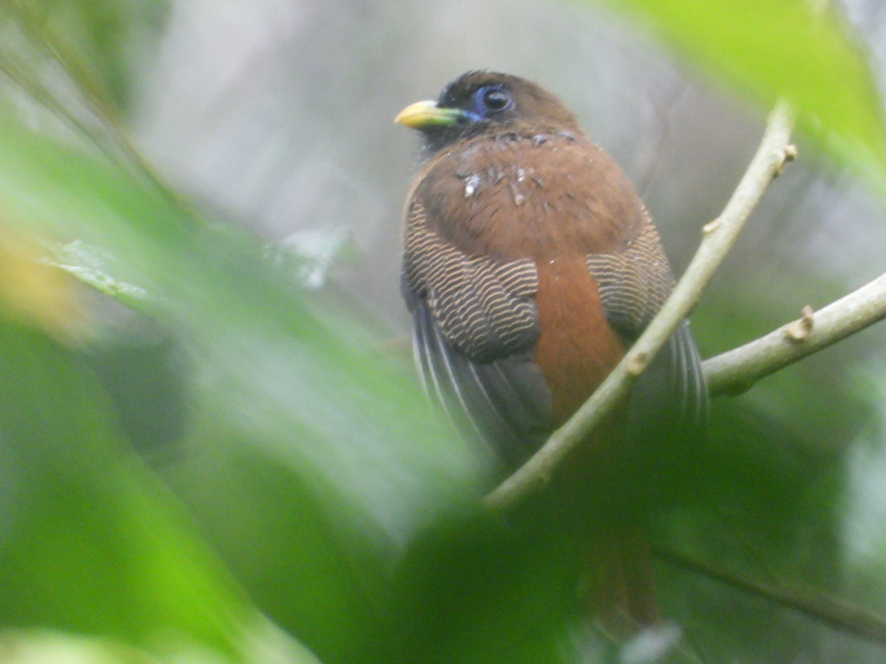

Choose your focus
Look up a scientific name, browse a species group, or narrow your search to a place and year.
A Philippine biodiversity field atlas
Every record tells a small part of a bigger story. Discover the species documented across the Philippines, and the observations that put them on the map.
Open biodiversity data. A closer look at home.

FIELD RECORD · PHILIPPINESHarpactes ardens · Cagayan
Photo: dmalerta · iNaturalist · CC BY-NC 4.0
01 / The project
BioAtlas PH makes public biodiversity records easier to explore. It connects species, places, and dates in one interactive map, with the original source always close at hand.
Look up a scientific name, browse a species group, or narrow your search to a place and year.
Explore mapped occurrences, photographs where available, and the people or institutions behind the data.
Save interesting records in this browser and return to them as you develop a research question.
An occurrence record documents a species at a particular place and time. It may describe an observation or a collected specimen. Records are not a live wildlife tracker or a population census.
Locations can be uncertain or generalized, and some places have been surveyed more than others. BioAtlas shows published records and their sources so you can interpret them in context.
Learn about GBIF02 / Behind the atlas
An individual IT 110 midterm project exploring how HTML, CSS, JavaScript, and public APIs can make biodiversity data accessible.
Project author
Responsible for the page structure, visual design, JavaScript logic, GBIF integration, and project documentation.